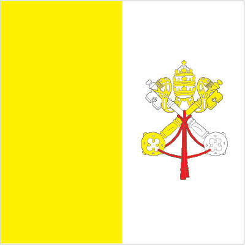
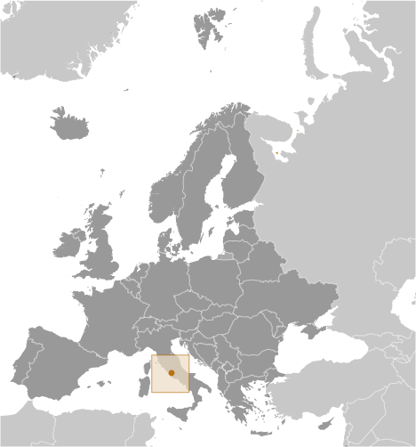
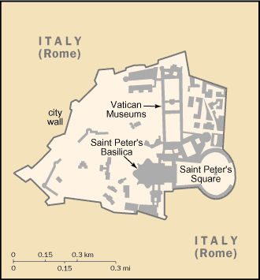

Europe :: HOLY SEE (VATICAN CITY)
Introduction :: HOLY SEE (VATICAN CITY)
-
Popes in their secular role ruled portions of the Italian peninsula for more than a thousand years until the mid-19th century, when many of the Papal States were seized by the newly united Kingdom of Italy. In 1870, the pope's holdings were further circumscribed when Rome itself was annexed. Disputes between a series of "prisoner" popes and Italy were resolved in 1929 by three Lateran Treaties, which established the independent state of Vatican City and granted Roman Catholicism special status in Italy. In 1984, a concordat between the Holy See and Italy modified certain of the earlier treaty provisions, including the primacy of Roman Catholicism as the Italian state religion. Present concerns of the Holy See include religious freedom, threats against minority Christian communities in Africa and the Middle East, the plight of refugees and migrants, sexual misconduct by clergy, international development, interreligious dialogue and reconciliation, and the application of church doctrine in an era of rapid change and globalization. About 1.2 billion people worldwide profess Catholicism - the world's largest Christian faith.
Geography :: HOLY SEE (VATICAN CITY)
-
Southern Europe, an enclave of Rome (Italy)41 54 N, 12 27 EEuropetotal: 0.44 sq kmland: 0.44 sq kmwater: 0 sq kmcountry comparison to the world: 254about 0.7 times the size of the National Mall in Washington, DCtotal: 3.4 kmborder countries (1): Italy 3.4 km0 km (landlocked)none (landlocked)temperate; mild, rainy winters (September to May) with hot, dry summers (May to September)urban; low hillmean elevation: NAelevation extremes: lowest point: Saint Peter's Square 19 mhighest point: Vatican Gardens (Vatican Hill) 78 mnoneagricultural land: 0%arable land 0%; permanent crops 0%; permanent pasture 0%forest: 0%other: 100% (urban area) (2011 est.)occasional earthquakessome air pollution from the surrounding city of Romeparty to: Ozone Layer Protectionsigned, but not ratified: Air Pollution, Environmental Modificationlandlocked; enclave in Rome, Italy; world's smallest state; beyond the territorial boundary of Vatican City, the Lateran Treaty of 1929 grants the Holy See extraterritorial authority over 23 sites in Rome and five outside of Rome, including the Pontifical Palace at Castel Gandolfo (the Pope's summer residence)
People and Society :: HOLY SEE (VATICAN CITY)
-
1,000 (2017 est.)country comparison to the world: 235noun: noneadjective: noneItalian, Swiss, Argentinian, and other nationalities from around the world (2017)Italian, Latin, French, various other languagesRoman Catholic0% (2014 est.)country comparison to the world: 192urban population: 100% of total population (2017)rate of urbanization: 0.1% annual rate of change (2015-20 est.)VATICAN CITY (capital) 1,000 (2014)NANANANA
Government :: HOLY SEE (VATICAN CITY)
-
conventional long form: The Holy See (Vatican City State)conventional short form: Holy See (Vatican City)local long form: La Santa Sede (Stato della Citta del Vaticano)local short form: Santa Sede (Citta del Vaticano)etymology: "holy" comes from the Greek word "hera" meaning "sacred"; "see" comes from the Latin word "sedes" meaning "seat," and refers to the episcopal chair; the term "Vatican" derives from the hill Mons Vaticanus on which the Vatican is located and which comes from the Latin "vaticinari" (to prophecy), referring to the fortune tellers and soothsayers who frequented the area in Roman timesecclesiastical elective monarchy; self-described as an "absolute monarchy"name: Vatican Citygeographic coordinates: 41 54 N, 12 27 Etime difference: UTC+1 (6 hours ahead of Washington, DC, during Standard Time)daylight saving time: +1hr, begins last Sunday in March; ends last Sunday in Octobernone11 February 1929; note - the three treaties signed with Italy on 11 February 1929 acknowledged, among other things, the full sovereignty of the Holy See and established its territorial extent; however, the origin of the Papal States, which over centuries varied considerably in extent, may be traced back to A.D. 754Election Day of Pope FRANCIS, 13 March (2013)history: previous 1929, 1963; latest adopted 26 November 2000, effective 22 February 2001 (Fundamental Law of Vatican City State); note - in October 2013, Pope Francis instituted a 9-member Council of Cardinal Advisors to reform the administrative apparatus of the Holy See (Roman Curia) to include writing a new constitutionamendments: note - although the Fundamental Law of Vatican City State makes no mention of amendments, Article Four (drafting laws), states that this legislative responsibility resides with the Pontifical Commission for Vatican City State; draft legislation is submitted through the Secretariat of State and considered by the pope (2016)religious legal system based on canon (religious) lawhas not submitted an ICJ jurisdiction declaration; non-party state to the ICCtcitizenship by birth: nocitizenship by descent: nodual citizenship recognized: noresidency requirement for naturalization: not applicablenote: in the Holy See, citizenship is acquired by law, ex iure, or by adminstrative decision; in the first instance, citizenship is a function of holding office within the Holy See as in the case of cardinals resident in Vatican City or diplomats of the Holy See; in the second instance, citizenship may be requested in a limited set of circumstances for those who reside within Vatican City under papal authorization, as a function of their office or service, or as the spouses and children of current citizens; citizenship is lost once an individual no longer permanently resides in Vatican City, normally reverting to the citizenship previously heldelection of the pope is limited to cardinals less than 80 years oldchief of state: Pope FRANCIS (since 13 March 2013)head of government: Secretary of State Cardinal Pietro PAROLIN (since 15 October 2013); note - Head of Government of Vatican City is President Cardinal Giuseppe BERTELLO (since 1 October 2011)cabinet: Pontifical Commission for the State of Vatican City appointed by the popeelections/appointments: pope elected by the College of Cardinals, usually for life or until voluntary resignation; election last held on 13 March 2013 (next to be held after the death or resignation of the current pope); Secretary of State appointed by the popeelection results: Jorge Mario BERGOGLIO, former Archbishop of Buenos Aires, elected Pope FRANCISdescription: unicameral Pontifical Commission for Vatican City State or Pontificia Commissione per lo Stato della Citta del Vaticano (7 seats; members appointed by the pope to serve 5-year terms)elections: last held on 1 June 2013highest court(s): Supreme Court or Supreme Tribunal of the Apostolic Signatura (consists of the cardinal prefect, who serves as ex-officio president of the court, and 2 other cardinals of the Prefect Signatura); note - judicial duties were established by the Motu Proprio, papal directive, of Pope PIUS XII on 1 May 1946; most Vatican City criminal matters are handled by the Republic of Italy courtsjudge selection and term of office: cardinal prefect appointed by the pope; the other 2 cardinals of the court appointed by the cardinal prefect on a yearly basissubordinate courts: Appellate Court of Vatican City; Tribunal of Vatican Citynonenone (exclusive of influence exercised by church officers)CE (observer), IAEA, Interpol, IOM, ITSO, ITU, ITUC (NGOs), OAS (observer), OPCW, OSCE, Schengen Convention (de facto member), SICA (observer), UN (observer), UNCTAD, UNHCR, Union Latina (observer), UNWTO (observer), UPU, WIPO, WTO (observer)chief of mission: Apostolic Nuncio Archbishop Christophe PIERRE (since 27 June 2016)chancery: 3339 Massachusetts Avenue NW, Washington, DC 20008telephone: [1] (202) 333-7121FAX: [1] (202) 337-4036chief of mission: Ambassador (vacant); Charge d'Affaires Louis BONO (since 20 January 2017)embassy: American Embassy to the Holy See, Via Sallustiana, 49, 00187 Rome, Italymailing address: Unit 5660, Box 66, DPO AE 09624-0066telephone: [39] (06) 4674-1FAX: [39] (06) 4674-3412two vertical bands of yellow (hoist side) and white with the arms of the Holy See, consisting of the crossed keys of Saint Peter surmounted by the three-tiered papal tiara, centered in the white band; the yellow color represents the pope's spiritual power, the white his worldly powercrossed keys beneath a papal tiara; national colors: yellow, whitename: "Inno e Marcia Pontificale" (Hymn and Pontifical March); often called The Pontifical Hymnlyrics/music: Raffaello LAVAGNA/Charles-Francois GOUNODnote: adopted 1950
Economy :: HOLY SEE (VATICAN CITY)
-
The Holy See is supported financially by a variety of sources, including investments, real estate income, and donations from Catholic individuals, dioceses, and institutions; these help fund the Roman Curia (Vatican bureaucracy), diplomatic missions, and media outlets. Moreover, an annual collection taken up in dioceses and from direct donations go to a non-budgetary fund, known as Peter's Pence, which is used directly by the pope for charity, disaster relief, and aid to churches in developing nations. Donations increased between 2010 and 2011.The separate Vatican City State budget includes the Vatican museums and post office and is supported financially by the sale of stamps, coins, medals, and tourist mementos; by fees for admission to museums; and by publication sales. Its revenues increased between 2010 and 2011 because of expanded operating hours and a growing number of visitors. However, the Holy See has not escaped the financial difficulties engulfing other European countries; in 2012, it started a spending review to determine where to cut costs to reverse its 2011 budget deficit of $20 million. The Holy See generated a modest surplus in 2012 before recording a $32 million deficit in 2013, driven primarily by the decreasing value of gold. Most public expenditures go to wages and other personnel costs; the incomes and living standards of lay workers are comparable to those of counterparts who work in the city of Rome. In February 2014, Pope FRANCIS created the Secretariat of the Economy to oversee financial and administrative operations of the Holy See, part of a broader campaign to reform the Holy See’s finances.$NAprinting; production of coins, medals, postage stamps; mosaics, staff uniforms; worldwide banking and financial activities4,822 (2016)country comparison to the world: 222note: essentially services with a small amount of industry; nearly all dignitaries, priests, nuns, guards, and the approximately 3,000 lay workers live outside the VaticanNA%revenues: $315 millionexpenditures: $348 million (2013)NA%NA%calendar yeareuros (EUR) per US dollar -0.9214 (2016 est.)0.885 (2015 est.)0.885 (2014 est.)0.7634 (2013 est.)0.7752 (2012 est.)
Communications :: HOLY SEE (VATICAN CITY)
-
general assessment: automatic digital exchangedomestic: connected via fiber-optic cable to Telecom Italia networkinternational: country code - 39; uses Italian system (2015)the Vatican Television Center (CTV) transmits live broadcasts of the Pope's Sunday and Wednesday audiences, as well as the Pope's public celebrations; CTV also produces documentaries; Vatican Radio is the Holy See's official broadcasting service broadcasting via shortwave, AM and FM frequencies, and via satellite and Internet connections (2008).va
Military and Security :: HOLY SEE (VATICAN CITY)
-
Pontifical Swiss Guard Corps (Corpo della Guardia Svizzera Pontificia) (2013)Pontifical Swiss Guard Corps (Corpo della Guardia Svizzera Pontificia): 19-30 years of age for voluntary military service; no conscription; must be Roman Catholic, a Swiss citizen, with a secondary education (2013)defense is the responsibility of Italy; ceremonial and limited security duties performed by Pontifical Swiss Guard
Transnational Issues :: HOLY SEE (VATICAN CITY)
-
none